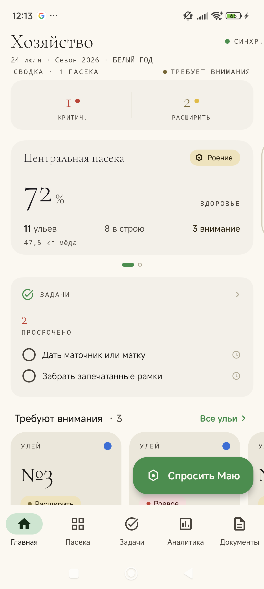
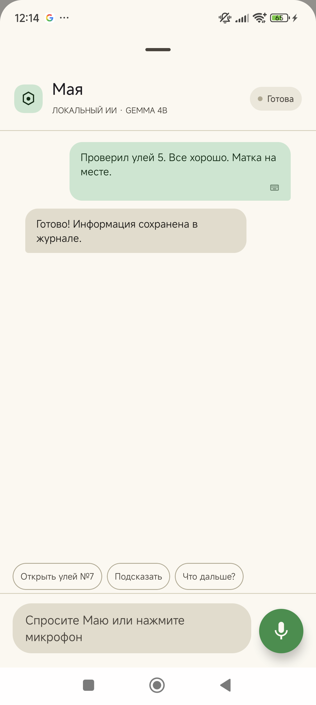
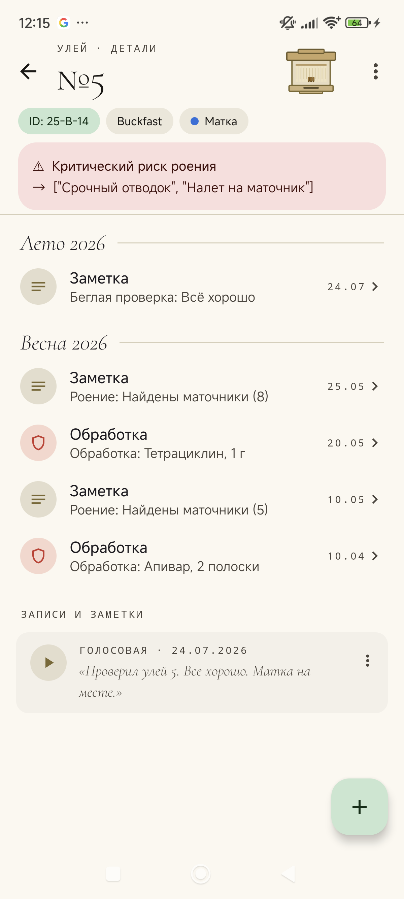

Голосовой дневник пасеки с ИИ-ассистентом Маей. Работает офлайн — руки в перчатках, телефон в кармане, всё через голос.
Скачать в RuStoreНадиктуйте наблюдение прямо у улья — «Мая» распознаёт речь и пишет в журнал. Экран трогать не нужно.
ИИ живёт на устройстве. На пасеке без связи всё работает: запись, вопросы, ответы голосом.
Анализирует тренды семьи и сигналит о риске роения заранее — до того, как рой улетит.
Рейтинг семей, родословная маток, поколения F0/F1/F2, журнал вывода — для тех, кто разводит.
Экспорт данных в CSV/Excel и выписка обработок для ветеринарной ревизии — в один тап.
Ничего не уходит в облако. Записи, голос и фото остаются на телефоне.


